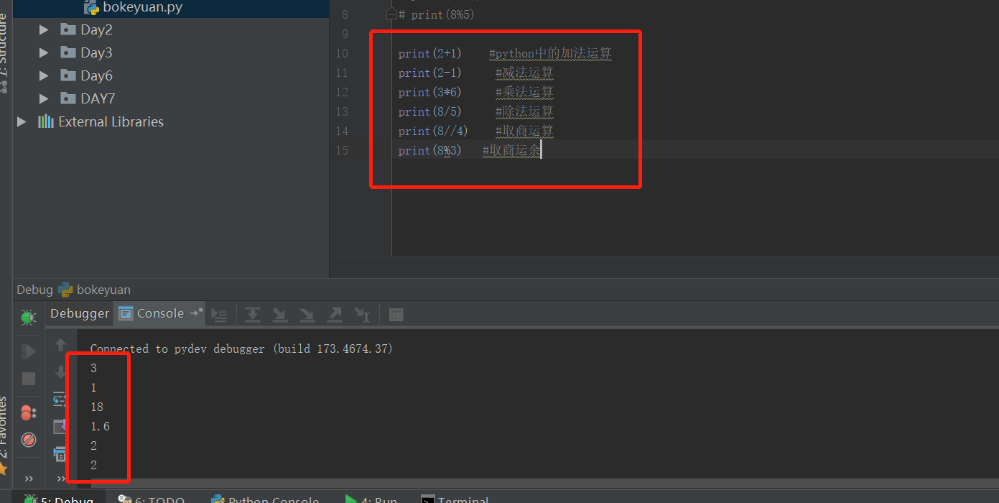
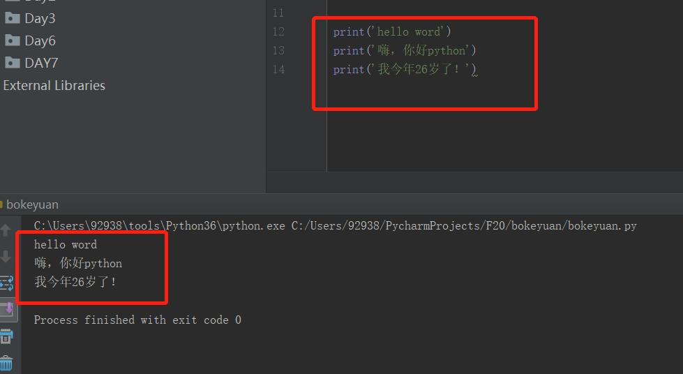

我是大刘啊~
坚持每周更新最少一次，为年薪20万迈进！
我为什么要学Python？
答：我想要涨工资。。。家里有矿我就不会来烧脑了。。。。。。
先写点什么呢？
新手，hhh，激动无比，无从下爪。。。。
python基本的数据类型吧
正题：python基本的数据类型
1、整数（int）：就是整数，上过数学课都知道1，2，3，4，56，189这些都是整数。
2、浮点数（float）:其实就是小数，在超市结算的时候，经常会遇见或者买菜的时候hhh，比如：3.14，5.6相信大家都会买东西。。。
3、布尔型：没错就是True、False，粗暴的说就是真、假两个状态吧。。。。可能这么理解不会很严谨，但是的确粗暴明了。
4、字符串：‘我爱你’ ‘I LOVE YOU’ '123上山一起打老虎，how' 相信看明白了吧，字符串需要用两个单引号或者双引号包围在里面，里面的数据可以是字母、数字、文字等字符。
------------------我相信你已经明白了上面的4条-------------------那么如果你安装了Pycharm神器，我们开始操作下--------------------
不在赘述怎么安装神器，以及怎么执行，相信百度给了你更好的解释。。。。。实在不会联系我吧。。。。。。。
花里胡哨的开始（加减乘除）：新手注意括号一定用英文括号
敲黑板： （建议直接复制，执行看下结果有个记忆就行）
案例开始：
print(2+1) #python中的加法运算
print(2-1) #减法运算
print(3*6) #乘法运算
print(8/5) #除法运算
print(8//4) #取商运算
print(8%3) #取商运余

以上案例都是python对于数字进行的操作，他们就是数字对象。那么问题来了，字符串是数据类型，也是对象吗？是的，它是字符串对象。
花里花哨的开始----python操作字符串
print('hello word')
print('嗨，你好python')
print('我今年26岁了！')

总结：
1、学会了Python对数字对象的操作，以及基本的运算。
2、知道了上面是字符串对象，以及字符串的格式，字符串需要将展示说明的内容，用两个英文单引号或英文双引号包围。
3、知道了基本的print（）这个内置的函数是干什么了，它就是将你要展示的结果打印输出到你的屏幕上。